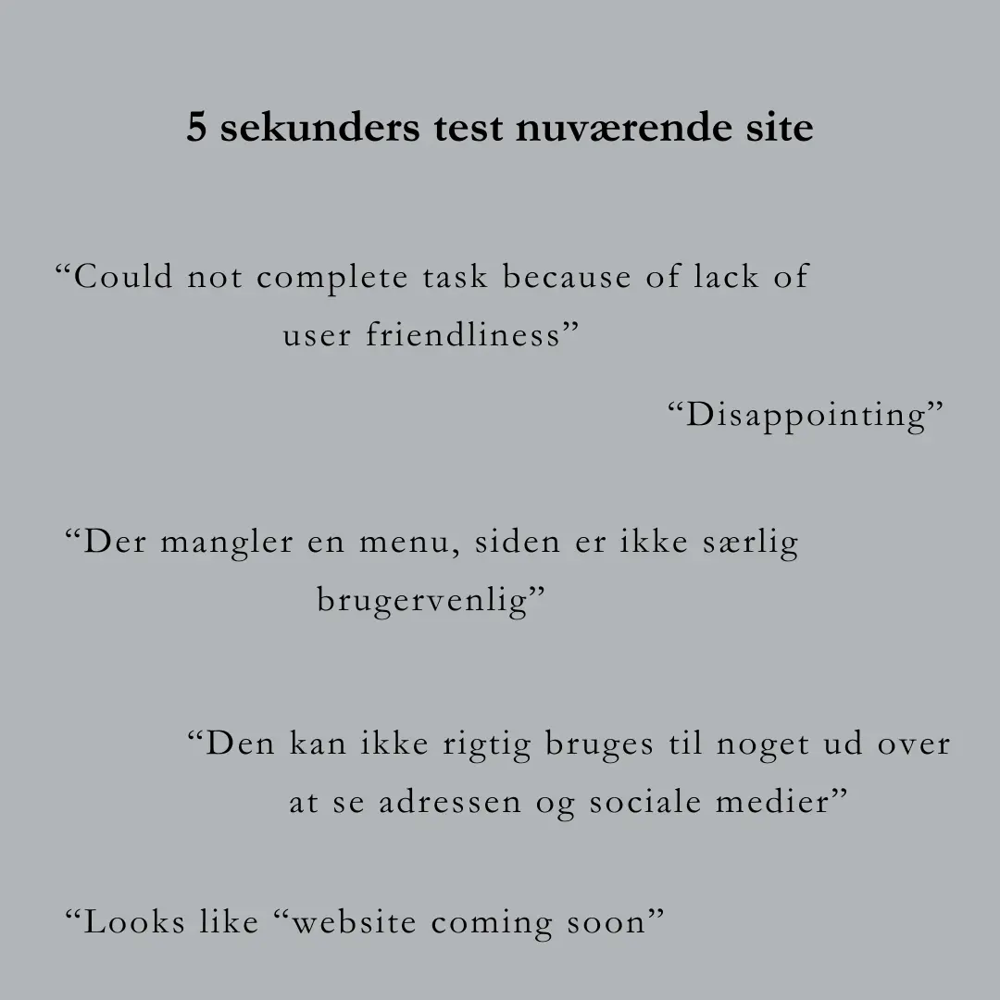
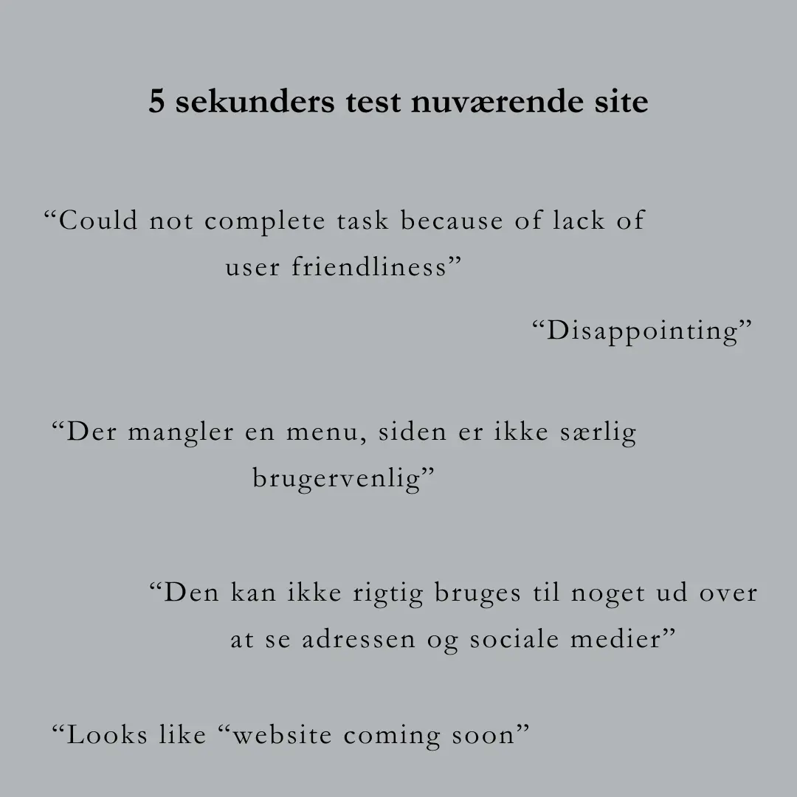

Følg med i min process over redesignet nedenfor


Vi ønskede at arbejde med en virksomhed, hvor vi kunne relatere i deres branding og identitet. Derfor valgte vi en vinbar eller lignende i lokalområdet (Nørrebro). Efter at have kigget rundt på Instagram fandt vi adskillige virksomheder, som vi kontaktede. Veranda Vin på Griffenfeldsgade på Nørrebro er en virksomhed, som flere af os i gruppen kender til. De svarede hurtigt og har en stor interesse i at få redesignet deres hjemmeside.
Vi tog et kig på virksomhedens eksisterende hjemmeside og deres forretningskoncept. Vi har ikke ændret målgruppen, men ønsker stadig at fokusere på den samme aldersgruppe som tidligere: 25-35-årige, folk der er begyndt at tjene penge og er villige til at investere i kvalitetsprodukter. Samtidig ønsker vi også at tilbyde et glas vin eller øl til en rimelig pris, så folk med en lavere indkomst også kan være med.
Når det kommer til brugerrejse og funktionaliteter, ønskede vi at forbedre informationen om Verandas baggrund, kerneværdier og events. Dette skulle realiseres ved at tilføje undersider, som brugeren kan klikke sig igennem på hjemmesiden.
I starten udarbejdede vi et moodboard med vores idéer til, hvad der kunne være fedt. Dog valgte vi ikke at følge det, da Peter fra Veranda ikke syntes, det afspejlede det udtryk, han ønskede at skabe med sin hjemmeside.
Efterfølgende blev det tydeligt at Veranda Vin har et meget klart og stærkt visuelt udtryk og branding hvilket vi valgte af følge. Vi fik derfor en masse grafisk materiale, farvekoder osv. af Peter.
Her ses nogle hi-fi og lo-fi wireframes over det nye site
Her kan I se det nuværende site https://www.verandavin.dk for sammenligning.
Peter, ejeren af Veranda Vin, har været med i processen, da han meget gerne ville bruge sitet i sidste ende. Dog måske en smule for meget nogle steder, da det har svækket brugervenligheden en smule, som vi godt kunne se.
Den første kode, jeg gerne vil fremhæve, er en fade-in effekt på nogle af billederne, herunder på siden 'events'. Der er gjort brug af en eventlistener. Når man scroller ned på siden, aktiveres en pop-up funktion på det ene billede.
Den anden kode, jeg vil fremhæve, er effekten på månen på forsiden. Vi har fundet effekten på Animista.com og tilpasset den til denne kode, som vi har implementeret i JavaScript.
Her ses de forskellige tests vi har lavet på det nuværende site og vores redesign.
Sitet har fået undersider, så brugeren kan navigere rundt og få relevant information. Sitet er også brugervenligt, hvilket blev bekræftet af vores tænke-højt-test, hvor vores testpersoner uden besvær kunne løse opgaverne.
Desuden ønsker Veranda Vin at bruge vores design og har bedt os om at kode hjemmesiden for dem, når vi er færdige med vores eksamener.
Alt i alt har vi skabt et site, som er meget mere brugervenligt og kan anvendes til relevant information. Derudover er det også designmæssigt mere harmonisk.
 



Videoen er et interview med indehaveren af Veranda, som fortæller om barens koncept og mål i forhold til bæredygtigt indkøb af naturvin. Vi har valgt at filme med vinbaren som baggrund for at fange den hyggelige stemning på Veranda og gøre det tydeligt, at videoen handler om en vinbar. Dette kommer også til udtryk i vores storyboard.
Under selve optagelsen brugte vi en Iphone 13 med en DJI Mimo Pocket attachment som vores primære kamera. For at sikre optimal lydkvalitet anvendte vi en knapmikrofon.
Vi stødte på nogle udfordringer med lydsporet fra knapmikrofonen under redigeringsprocessen og endte derfor med at anvende det oprindelige lydspor i den endelige video. Vi forsøgte at reducere baggrundsstøj og forbedre lydkvaliteten ved hjælp af Premiere Pro's automatic repair og clip gain funktioner.